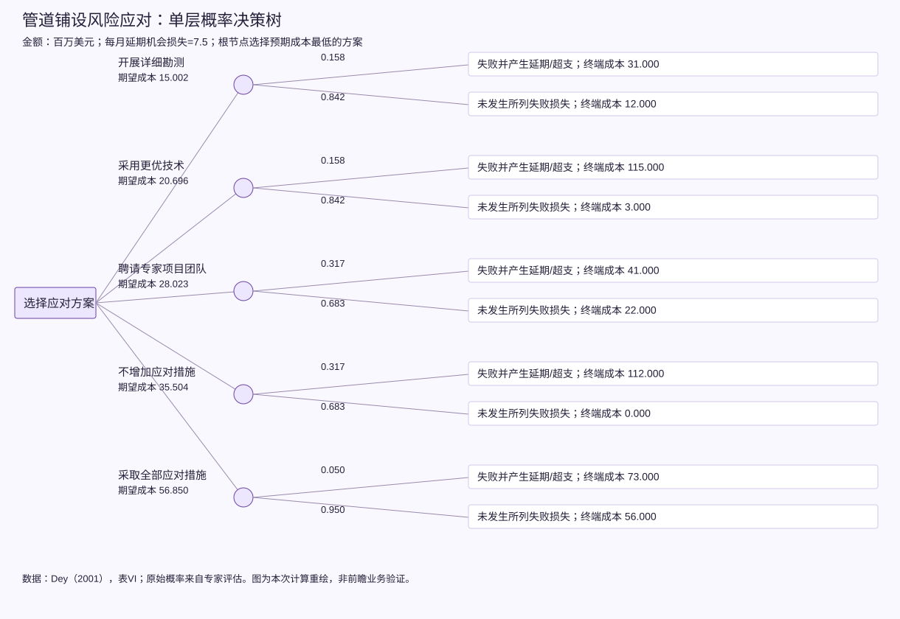

21项案例检查通过。按公开输入，详细勘测预期成本最低；延期机会损失低于约390万美元/月时，改选更优技术。

| 方案 | 预期成本（百万美元） |
|---|---|
| 开展详细勘测 | 15.002 |
| 采用更优技术 | 20.696 |
| 聘请专家项目团队 | 28.023 |
| 不增加应对措施 | 35.504 |
| 采取全部应对措施 | 56.850 |
勘测：12+0.158×(2r+4)。技术：3+0.158×(12r+22)。解得r≈3.8962；在测试区间0～7.5内，低于该值选技术，高于该值选勘测。勘测失败概率q升至约45.77%时，也会改选技术。
把月度损失再次乘12，程序仍能运行，独立核算才发现单位错误。V1.4.1据此补充量纲和独立复算要求。
该案例来自真实项目公开模型，概率是专家评估。本次检验单层树和敏感性，不代表概率真实、未来业务效果或多阶段树已经验证。